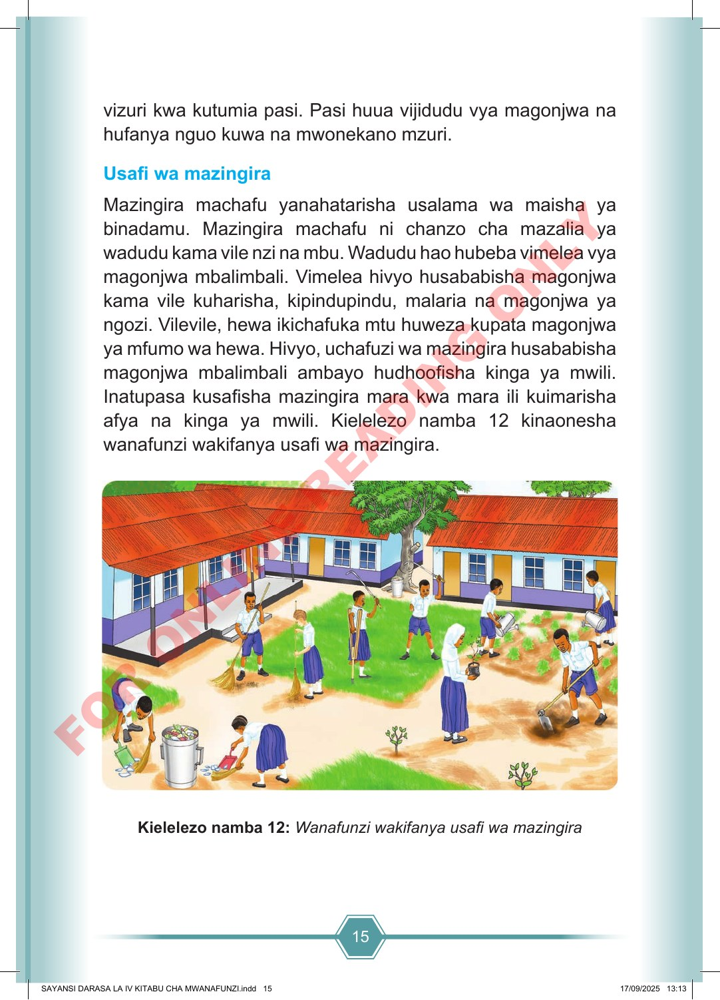

15 vizuri kwa kutumia pasi. Pasi huua vijidudu vya magonjwa na hufanya nguo kuwa na mwonekano mzuri. Usafi wa mazingira Mazingira machafu yanahatarisha usalama wa maisha ya binadamu. Mazingira machafu ni chanzo cha mazalia ya wadudu kama vile nzi na mbu. Wadudu hao hubeba vimelea vya magonjwa mbalimbali. Vimelea hivyo husababisha magonjwa kama vile kuharisha, kipindupindu, malaria na magonjwa ya ngozi. Vilevile, hewa ikichafuka mtu huweza kupata magonjwa ya mfumo wa hewa. Hivyo, uchafuzi wa mazingira husababisha magonjwa mbalimbali ambayo hudhoofisha kinga ya mwili. Inatupasa kusafisha mazingira mara kwa mara ili kuimarisha afya na kinga ya mwili. Kielelezo namba 12 kinaonesha wanafunzi wakifanya usafi wa mazingira. Kielelezo namba 12: Wanafunzi wakifanya usafi wa mazingira SAYANSI DARASA LA IV KITABU CHA MWANAFUNZI.indd 15 SAYANSI DARASA LA IV KITABU CHA MWANAFUNZI.indd 15 17/09/2025 13:13 17/09/2025 13:13 F O R O N L I N E R E A D I N G O N L Y